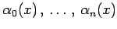
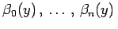
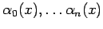
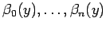

Inhalt Index DeskTop Bronstein

 Lineare Integralgleichungen Fredholmsche Integralgleichungen 2. Art Numerische Verfahren für Fredholmsche Integralgleichungen 2. Art Kernapproximation
Lineare Integralgleichungen Fredholmsche Integralgleichungen 2. Art Numerische Verfahren für Fredholmsche Integralgleichungen 2. Art Kernapproximation


Eine häufig verwendete Näherung für den Kern ist die Tensorprodukt-Approximation der Form
mit linear unabhängigen Funktionen  bzw. . Diese Funktionen werden vorgegeben, und die Koeffizienten djk können so bestimmt werden, daß die Doppelsumme den Kern in einem gewissen Sinne gut approximiert. Umformung von (11.31a) mit ausgeartetem Kern ergibt:
Somit kann das unter Integralgleichungen mit ausgearteten Kernen vorgestellte Verfahren zur Lösung der Integralgleichung
zur Anwendung kommen. Bei der Auswahl der Funktionen  bzw.  sollte beachtet werden, daß die Zahlen djk in (11.31a) einfach zu bestimmen sind und der Rechenaufwand zur Behandlung von (11.31c) gering bleibt.